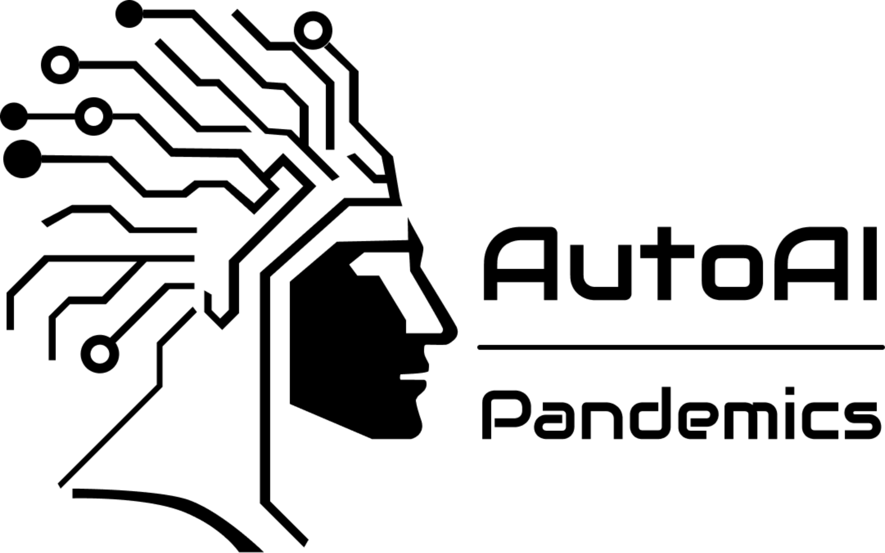

Notícias
Acompanhe o Sabiá

Parceria com o Hub AutoAI
O Sabiá é parceiro do hub AutoAI-Pandemics, iniciativa internacional financiada pela AI4PEP e desenvolvida em parceria com 16 países do Sul Global. AutoAI visa democratizar soluções de IA para não especialistas.
AutoAI - Ver mais AI4PEP - Ver mais
Conheça o Projeto InteliGente
Reconhecido com mais de 40 prêmios nacionais e internacionais, o InteliGente visa democratizar o acesso à IA por meio da educação social e apoia o Sabiá na formação ética, inclusão digital e capacitação.
InteliGente - Ver mais Notícias - Ler mais